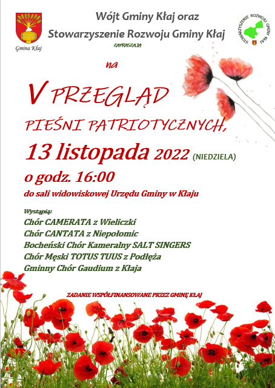
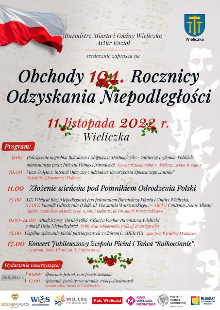
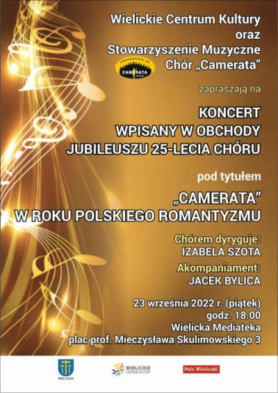
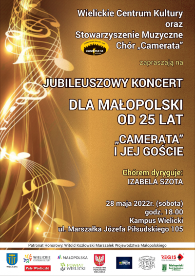
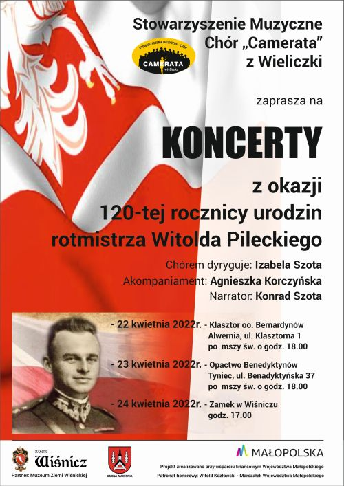
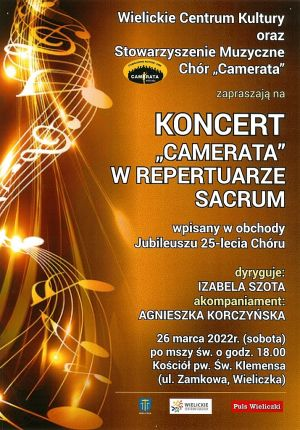
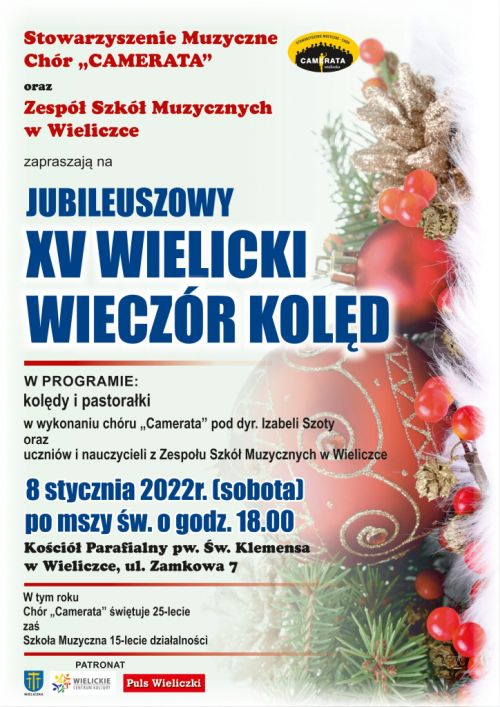

Aktualności
Aktualności archiwalne
Rok 2022
2022-11-25
Camerata bawi się dzisiaj ... Andrzejki !!! czytaj dalej ...2022-11-20
Koncert w Sanktuarium Matki Bożej Łaskawej Księżnej Wieliczki. czytaj dalej ...2022-11-19
Uczestniczymy w jubileuszu 150-lecia nieprzerwanej działalności Towarzystwa Śpiewaczego Lutnia. czytaj dalej ...2022-11-13
Udział chóru w V Przeglądzie Pieśni Patriotycznych w Kłaju czytaj dalej ...2022-11-11
Stowarzyszenia Muzyczne - Chór Camerata świętyje 104 Rocznicę Odzyskania Niepodległości czytaj dalej ...2022-11-07
Koncert w kościele oo Reformatów w Wieliczce 20 listopada 2022r. o godz.18.00Zapraszamy.
2022-11-07
Zapraszamy
2022-11-07
Zapraszamy na koncert 11.11.2022 godz.15. Plac przy Mediatece Wielickiej.
2022-09-23
Koncert „Camerata w roku polskiego romantyzmu” czytaj dalej ...2022-09-12
Zapraszamy na koncert 23.09.2022r.
czytaj dalej ...
2022-06-30
Wybieramy PREZESA na kolejną kadencję. czytaj dalej ...2022-05-28
"Dla Małopolski od 25 lat". Jubileszowy koncert Cameraty.
czytaj dalej ...
2022-05-22
„Międzypokoleniowy polonez na 100 par”. czytaj dalej ...22-05-21
Camerata na wernisażu Józefa Kowalczyka. czytaj dalej ...2022-04-29 do 2022-05-04
Chór Camerata w ramach obchodów 25-lecia swojej działalności odbył 25 tournée koncertowe. Tym razem celem wyprawy były Włochy i „odcinek Adriatycki” szlaku II Korpusu gen. Władysława Andersa. czytaj dalej ...2022-04-22,23,24
Koncerty, które miały miejsce w Klasztorze OO. Bernardynów w Alwerni (22 kwietnia), Opactwie Benedyktynów w Tyńcu (23 kwietnia) oraz w Zamku w Wiśniczu (24 kwietnia) stanowiły muzyczne opowieści, w których równie ważne były wspomnienia rtm. Pileckiego, relacje jego bliskich, jak i pieśni, będące muzycznym komentarzem do wydarzeń z życia tego wielkiego Polaka. czytaj dalej ...2022-04-22,23,24

czytaj dalej ...
2022-03-26
Wielicki chór Camerata pod dyrekcją Izabeli Szoty, przy akompaniamencie Agnieszki Korczyńskiej (fortepian), wystąpił w Kościele Św. Klemensa w repertuarze sakralnym. czytaj dalej ...2022-03-24
Zapraszamy na koncert
czytaj dalej ...
2022-01-08
XV Wielicki Wieczór Kolęd
czytaj dalej ...

© Stowarzyszenie Muzyczne Chór Camerata Wieliczka
Projekt i wykonanie:  Prowadzenie strony: Małgorzata Wysocka-Cebula
Prowadzenie strony: Małgorzata Wysocka-Cebula